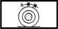

FRONT BRAKE DISC.
- Path
- Technical Data > 33 BRAKING SYSTEM > 3310 DISC BRAKES > FRONT BRAKE DISC.
- Kind
- technical data / specifications
- Applies to
- engines: 2.0 JTS, 3.2 V6, 1.9 JTD 16V; all production periods
- Interactive page
- https://sloeber94.github.io/elrnDB-aGt/en/#/125000135
Applies to: engines: 2.0 JTS, 3.2 V6, 1.9 JTD 16V; all production periods
b (mm) | Validity |  | ||
|---|---|---|---|---|
3˚ 55' ± 30' | 1.9 JTD 16V 2.0 JTS 3.2 V6 | |||
(Unladen vehicle filled with fluids) (-) - | ||||